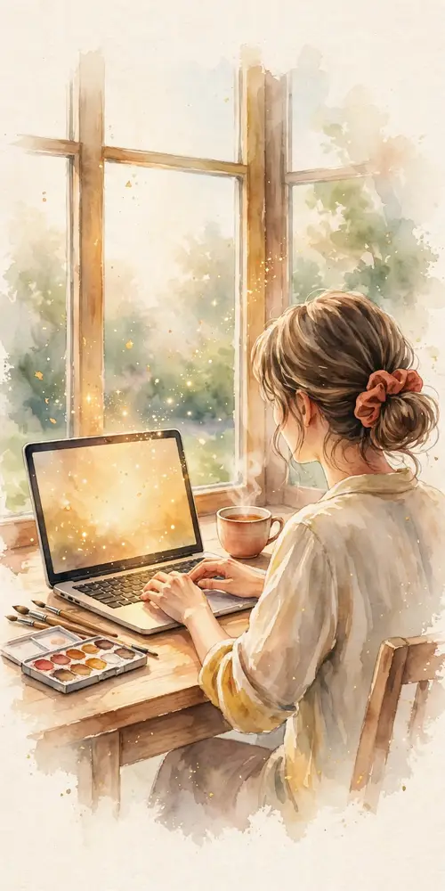
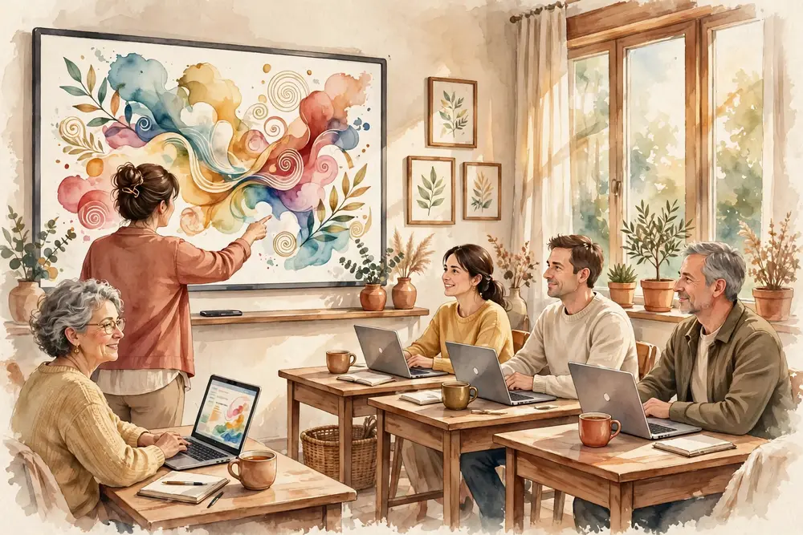
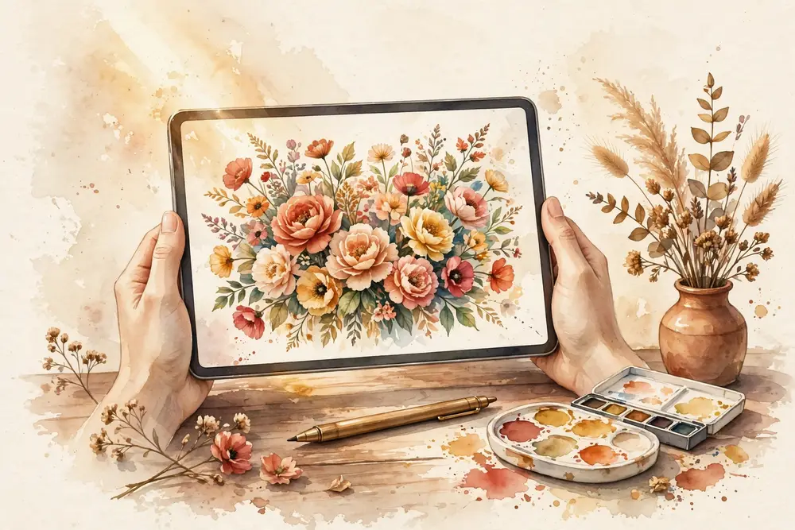
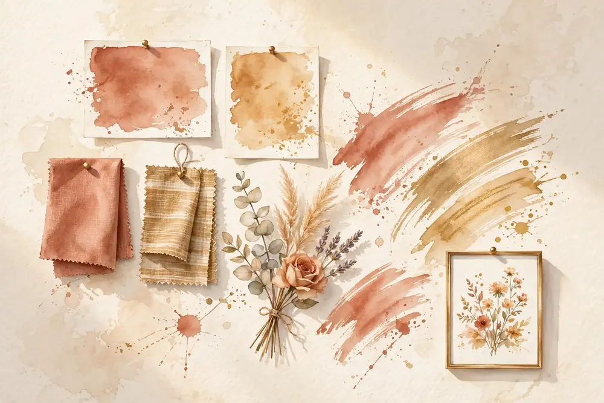
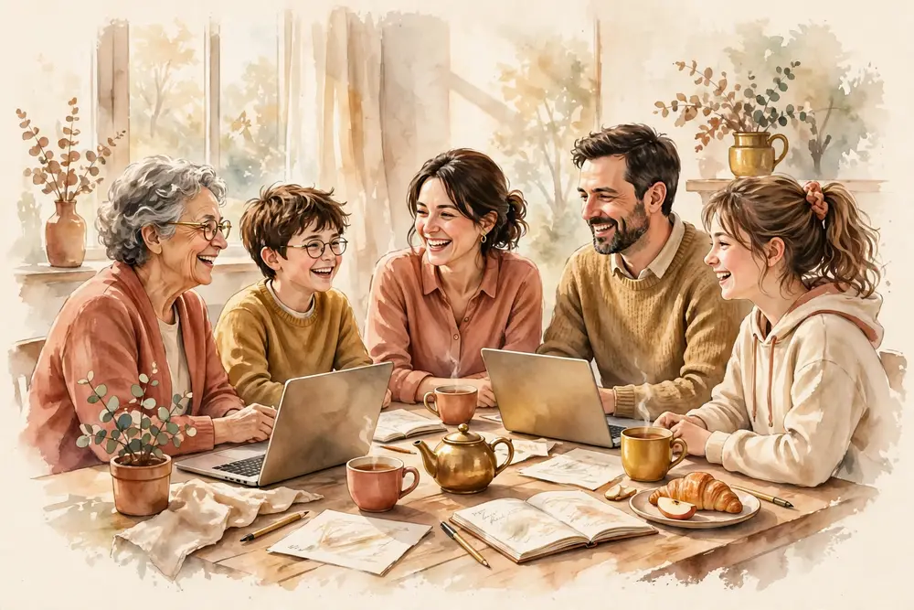

風格鎖定：Warm contemporary editorial watercolor illustration, terracotta rose #C06B4A and antique gold #D9A441 palette on warm cream background, soft morning light, serene hopeful mood, no text, no watermark。
出圖：AI 插畫 8 張，重出 0 張。真實照片 1 張（肖像裁自本人講師介紹海報）。
Warm contemporary editorial watercolor illustration, vertical portrait composition. A woman seen from behind and slightly to the side, sitting at a bright wooden desk by a large morning window, typing on a laptop whose screen glows with soft golden light and tiny floating sparkles; beside the laptop lie watercolor brushes, a small paint palette and a cup of tea. Terracotta rose #C06B4A and antique gold #D9A441 palette on warm cream background, soft morning light, serene hopeful mood, no text, no watermark, no visible face.

Warm contemporary editorial watercolor illustration, landscape composition. A laptop on a wooden desk with a glowing screen showing abstract colorful flowing shapes, a watercolor paint palette and brushes beside it, golden light particles rising where technology meets art, a small potted plant and dried flowers at the edge. Terracotta rose #C06B4A and antique gold #D9A441 palette on warm cream background, soft morning light, serene hopeful mood, no people, no text, no watermark.
Warm contemporary editorial watercolor illustration, landscape composition. A bright cozy classroom: a woman teacher seen from behind at the front pointing at a large screen showing colorful AI-generated artwork, a small group of adult learners of different ages sitting at desks with laptops, smiling softly, warm sunlight through windows, cups of tea on desks. Terracotta rose #C06B4A and antique gold #D9A441 palette on warm cream background, serene hopeful mood, generic soft faces only, no text, no watermark.

Warm contemporary editorial watercolor illustration, landscape composition. Close view of hands holding a tablet that displays a beautiful colorful AI-generated floral artwork, a stylus resting on a wooden desk beside watercolor paints and a small vase of dried flowers, soft golden light. Terracotta rose #C06B4A and antique gold #D9A441 palette on warm cream background, serene hopeful mood, no faces, no text, no watermark.

Warm contemporary editorial watercolor illustration, landscape composition. A mood board on a warm cream wall: pinned color swatches in terracotta and gold, fabric samples, dried flowers, paint brush strokes and a small framed floral print, soft morning light. Terracotta rose #C06B4A and antique gold #D9A441 palette on warm cream background, serene hopeful mood, no people, no text, no watermark.

Warm contemporary editorial watercolor illustration, landscape composition. A woman seen from behind recording a short video with a phone on a small tripod in a warm bright studio, a laptop and a ring light nearby, cozy plants, no visible face. Terracotta rose #C06B4A and antique gold #D9A441 palette on warm cream background, soft morning light, serene hopeful mood, no text, no watermark.

Warm contemporary editorial watercolor illustration, landscape composition. A warm community learning circle: people of different ages sitting around a wooden table with laptops and cups of tea, laughing softly together, sunlight through windows, generic soft faces only. Terracotta rose #C06B4A and antique gold #D9A441 palette on warm cream background, serene hopeful mood, no text, no watermark.

Warm contemporary editorial watercolor illustration, vertical portrait composition. A confident woman seen from behind walking toward a sunlit morning street carrying a laptop bag, long soft shadows, golden light, hopeful mood, no visible face. Terracotta rose #C06B4A and antique gold #D9A441 palette on warm cream background, serene hopeful mood, no text, no watermark.

photo-iris-portrait.webp｜李羽妍本人肖像，裁自她的講師介紹海報（原海報取自 AI 技能培訓班參考站公開圖片）。主視覺肖像用此裁切版，臉與頭頂完整。